Basic Clusters Analysis
Acknowledgement: This course (CSCI 5523) is being offered by Prof. Vipin Kumar at the University of Minnesota in Fall 2020.
Cluter Analyusis is to find groups of objects such that the objects in a group will be similiar to one another and different from the objects in other groups. It’s often used to understanding data sets by grouping related data together, or reduce the size of large data sets. Note that simple segmentation such as sorting by last name, results of a query and supervised classification are not cluster analysis.
A clustering is a set of clusters. In general, there are two types of clusterings – Partitional Clustering and Hierarchical Clustering as following shown:
Not only this, there are also other distrinction between sets of clusters.
- Exclusive vs Non-exclusive
In non-exclusive clusterings, points may belong to multiple clusters. - Fuzzy vs Non-fuzzy
In fuzzy clustring, a point belongs to every cluster with some weight between 0 and 1; weight must sum to 1. - Partial vs Complete
In some cases, we only want cluster some of the data. - Heterogeneous vs Homogeneous
Cluters of widely different sizes, shapes, and densities.
Type of clusters
- Well-separated Clusters: a cluster is a set of points such that any point in a cluster is closer (or more similiar) to every other point in the cluster than to any point not in the cluster.
- Center-based Clusters: A cluster is a set of objects such that an object in a cluster is closer to the “center” of a cluster, than to the center of any other cluster. Often, the center of a cluster is a centroid, the average of all the points in the cluster, or a medoid, the most “representative” point of a cluster.
- Contiguous Clusters (Nearest neighbor or Transitive): a cluster is a set of points such that a point in a cluster is closer (or more similiar) to one or more other points in the cluster than to any point not in the cluster.
- Density-based Clusters: a cluster is a dense region of points, which is separated by low-density regions, from other regions of high density. It’s used when the clusters are irregular or intertwined, and when noise and outliers are present.
Clustering Algorithms
K-means and its variant

The idea of K-means is not difficult to understand. First, we pick randomly K points as initial center and assign all points to their closest center respectively. Then recompute the center of each cluster since we have more than a single initial point in a cluster now. We repeat this process until the centers don’t change. K-means is a partitional clustering approach, and intially K must be specified.
Furthermore, the initial centroids are oftren chosen randomly and if you choose a different intial centroid, you might end up with a different set of clusters. The centroid is (typically) the mean of the points in the cluster. How close each data point to a centroid can be measured by Euclidean distance, cosine similarity, correlation, etc. K-means will converge for common similarity measures mentioned above. Most of the convergence happens in the first few iterations, and often the stopping condition is changed to “Util relatively few points change clusters” rather than “no change…” Note that the complexity of K-means is where
is the number of points,
is the number of clusters,
is the number of iterations, and
is the number of attributes.
How to evaluate K-means Cluster?
The most common measure is Sum of Squared Error (SSE), which is summing up the error - the distance to the neareast cluster at each point.
where is a data point in cluster
and
is a representative point for cluster
(can show that
corresponds to the center (mean) of the cluster). If we’re given two sets of clusters, we prefer the one with the smallest error. Note that a way to reduce SSE is to increase K, the number of cluster, but a good clustering with smaller K can have a lower SSE than a poor clustering with higher K.
How to optimize K-means Cluster?
The choice of initial points are important. If there are K ‘real’ clusters then the chance of selecting one centroid from each cluster is relatively small. If the clusters are the same size with ‘real’ clusters, then
For example, if , the probability is around
. Sometimes the initial centroids will readjust themselves in ‘right’ way but sometimes they don’t. Let’s take a look at some bad clutering examples with K-means:
The 1st, 3rd, 4th colomn have two clusters (black plus sign) with two ‘real’ clusters, so they perform normally. However, the 2nd colomn has only one cluster and the 5th colomn has three clusters when they both have two ‘real’ clusters. From iteration 1-4, we can see that it stops at a akward position and doesn’t correctly classify. So what do people normally do to solve initial centroids probloms?
- Multiple runs: helps, but probability is not in your side, so not helpful in the scenario above.
- Sample and use hierarchical clustering to determine initial centroids.
- Use some strategy to select the k initial centroids and then select among these initial centroids.
Example: select most widely separated - Bisecting K-means: Not as susceptible to initilization issues.
Since this is an intro class, we didn’t go into details of above solutions.
Additioanlly, people also perform pre-processing and post processing to improve the performance of K-means.
-
Pre-processing
- Normalize the data
- Eliminate outliers
-
Post-processing
- Eliminate empty clusters and small clusters that may represent outliers
- Split ‘loose’ clusters, i.e., clusters with relatively high SSE
- Merge clusters that are ‘close’ and that have relatively low SSE
- These steps can be used multiple times duiring the clustering process
How to handle empty cluster?
Let’s see an example that empty cluster can happen:
Basic K-means algorithm can yield empty clusters, then how can we handle it?
- Choose the point that contributes most to SSE, and make it a new centroid.
- Choose a point from the cluster with the highest SSE, and make it a new centroid.
- If there are several empty clusters, the above can be repeated several times.
How to update centers incrementally?
In the basic K-means algorithm, centroids are updated after all points are assigned to a centroid. An alternative way is to update the centroid after each assignment (incremental approach), then each assignment updates zero or two centroids. It’s more expensive, and introduces an order dependency, but it never get an empty cluster.
Limitations of K-means
K means has problems when clusters are of differing sizes, densities or non-globular shapes. Also, K-means has problems when the data contains outliers.
- Differing sizes
One solution is to use many clusters, but eventually need to put some clusters together to match ground truth.
- Differing densities
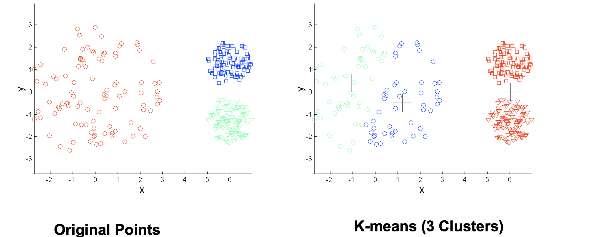
Again, increasing number of clusters can solve this situation.
- Non-globular shapes
Same solution: use more clusters
Hierarchical Clustering
It produces a set of nested clusters organized as a hierarchical tree, and it can be visualized as a dendrogram, which is a tree like diagram below that records the sequences of merges or splits.
The stengths of Hierarchical Clustering is that we do not have to assume any particular number of clusters because any desired number of clusters can be obtained by ‘cutting’ the dendrogram at the proper level. Also, those clusters gained may correspond to meaningful taxnomies such as animal kingdom, phylogeny reconstruction in biological sciences.
It’s not difficult to image there are two mian types of hierarchical clustering. The first one is agglomerative, which is starting with the points as individual clusters, then at each step merge the closest pair of cluster until only one cluster (or k clusters) left. The second one is divisive, which starts with an all-inclusive cluster, then at each step split a cluster until each cluster contains an individual point (or there are k clusters). The basic algorithm is straightforward as below:
How to define Inter-Cluster Similarity?
There are in general 4 ways to do it, which are MIN, MAX, Group Average Distance Between Centroids and other methods driven by an objective function.
MIN
The proximity of two Cluster is based on the two closest points in the different clusters. It’s determined by one pair of points, i.e., by one link in the proximity graph.
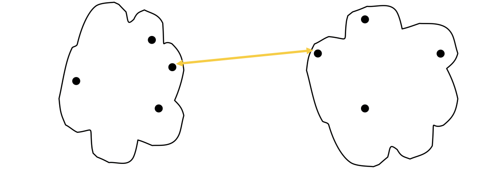
The stength of MIN is that it can handle non-elliptical shapes.
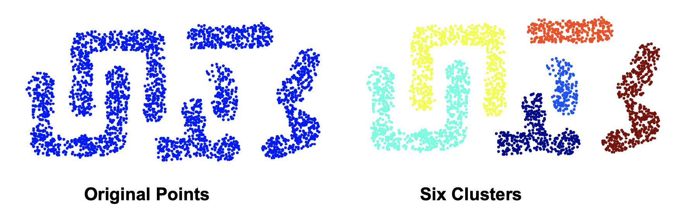
The limitation of MIN is that it’s sensetive to noise and outliers.
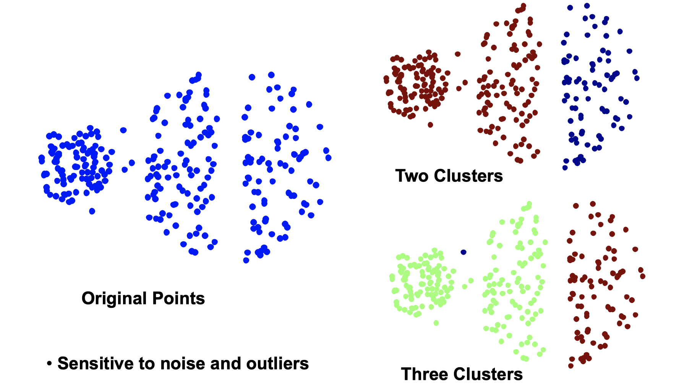
MAX
The proximity of two clusters is based on the two most distant points in the different clusters.
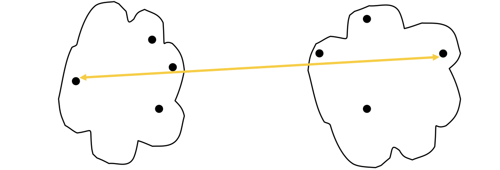
The stength of MAX is that it’s less susceptible to noise and ouliers. The limitation of MAX is that it tends to break large clusters and biased towards globular clusters as following:
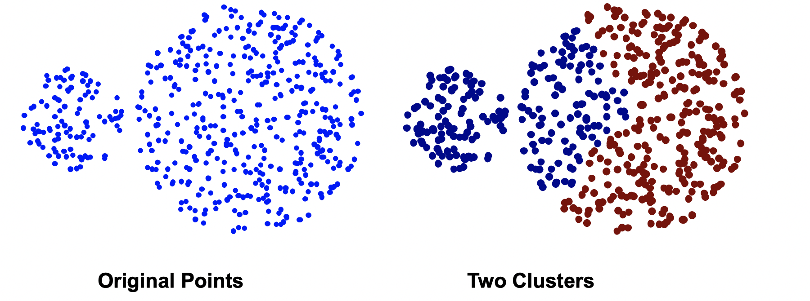
If you’re looking for a globular clusters, MAX is a good choice; but if you’re looking at arbitrary shape clusters, mean is a better choice.
Group Average
The proximity of two clusters is the average of pairwise proximity between points in the two clusters.
The stength of Group Average is that it’s also less susceptible to noise and outliers, while its limitation is that is biased towards glubular clusters. Group Average is more robust than single link like MIN and MAX.
Ward’s Method
Similarity of two clusters is based on the increase in squared error when two clusters are merged. This is similiar to Group Average if distance between points is distance squared. Its strength is that it’s less susceptible to noise and outliers and its limitation is that it biased towards globular clusters. One of its applciation is to initialize K-means in Hierarchical analogue of K-means.
Summary of Hierarchical Clustering
Time and Space Requirements
space since it uses the proximity matrix.
is the number of points.
time in many cases. There are
, proximity matrix must be updated and searched. The Complexity can be reduce to
time with some cleverness.
Problems and Limitations:
- Once a decision is made to combine two clusters, it cannot be undone.
- No global objective function is directly minimized.
- Different schemes have problems with one or more of the following:
- Sensitive to noise and outliers
- Difficulty handing clusters of diferent sizes and non-globular shapes
- Breaking large clusters
Density Based Clustering (DBSCAN)
Clusters are regions of high density that are separated from one another by regions on low density.
DBSCAN is a density-based algorithm. We define density as number of points within a specified radius (Eps). If a point has at least a specified number of points (MinPts) within Eps, then it’s a core point. If a point is not a core point but is in the neighborhood of a core point, then it’s a border point. If a point is neither a core point or a border point, then it’s a noise point.
There is a verbal DBSCAN algorithm:
- Label all points as core, border, or noise points.
- Eliminate noise points.
- Put an edge between all core points within a distance Eps of each other.
- Make each group of connected core points into a separate cluster.
- Assign each border point to one of the clusters of its associated core points.
DBSCAN works well since it’s resistant to noise and can handle clusters of different shapes and sizes as the image following:
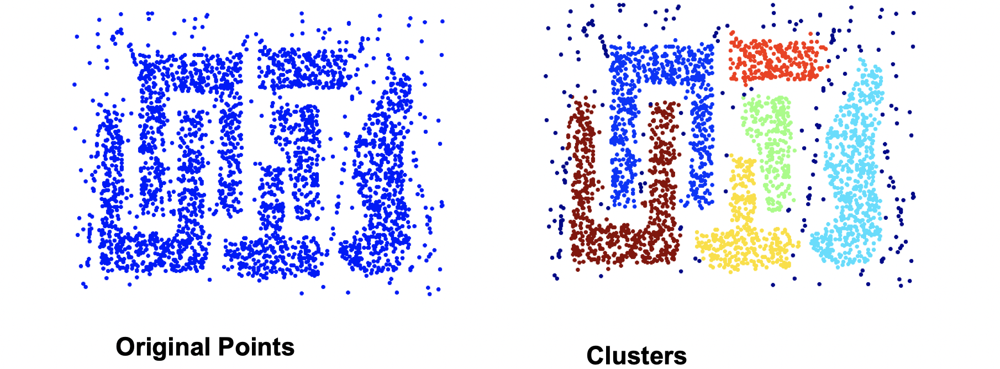
DBSCAN doesn’t work well if the situation is as following:
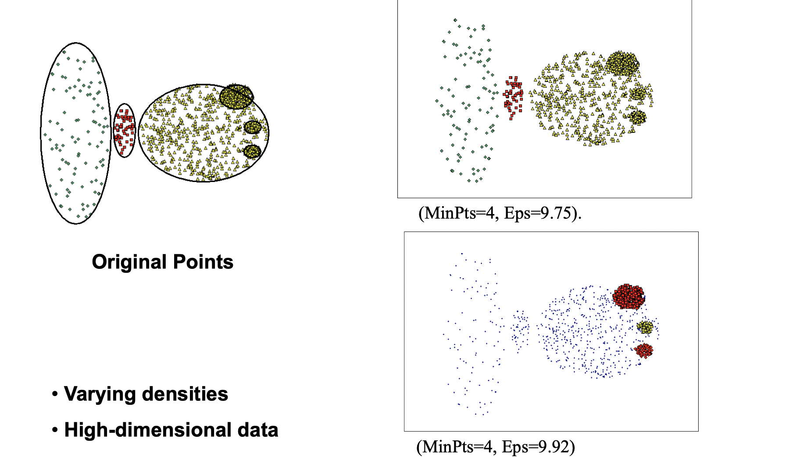
How to determine Eps and MinPts?
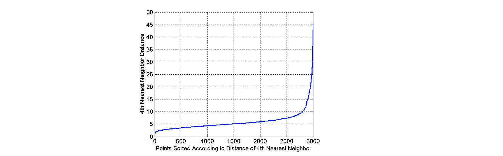
The idea is to plot a graph of sorted distance of every point to its kth nearest neighbors. In the graph above, we can see that Eps=10 might be a good choice, because that’s where the “elbow” happens. For instance, as in the graph, ask the question of how far is your 4th neighbor for each point among 3000 points, and plot a graph
Cluster Validity
How to evaluate the “goodness” of the resulting clusters? “Clusters are in the eye of beholder”, then why do we want to evaluate them while we can tell just by looking at them?
- To avoid finding patterns in noise
- To compare clustering algorithms
- To compare two sets of clusters
- To compare two clusters
Different aspects of cluster validation
- Determing the clustering tendency of a set of data, i.e., distinguishing whether non-random structure actually exists in the data.
- Comparing the results of a cluster analysis to externally knonw results, e.g., to externally given class labels.
- Ecaluating how well the results of a cluster analysis fit the data without reference to external information, i.e., use only the data.
- Comparing the results of two different sets of clusters (generated for the same data) to determine which is better.
Measure cluster validity via correlation
Suppose we have two matrices. One is proximity matrix and another is ideal similarity matrix, where one row and one colomn for each data point, and an entry is 1 if the associated pair of points belong to the same cluster; otherwise, an entry is 0. Now we need to compute the correlation between the two matrices. Since the matrices are symmetric, only the correlation between entries needs to be calculated. High magnitude of correlation indicates that points that belong to the same cluster are close to each other.
There is a example as following:
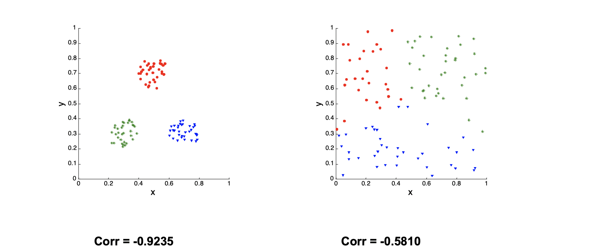
The left one is much more clustered than the right one, so the Correlation of the left one is close to -1.
Use similarity matrix for cluster validation
First, let’s look at the similarity matrix of a good clustering example:
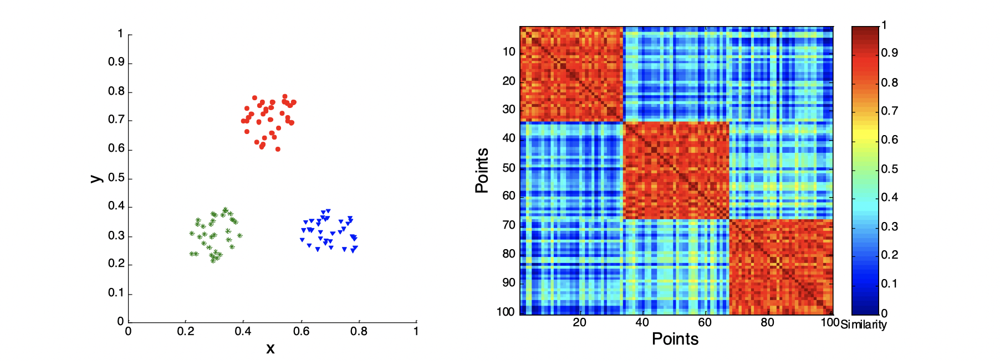
Second, let’s look at how three clusters behave differently on random data that are not so crisp.
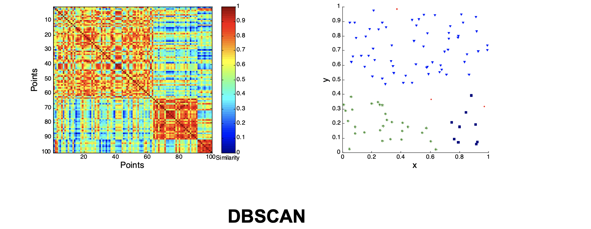
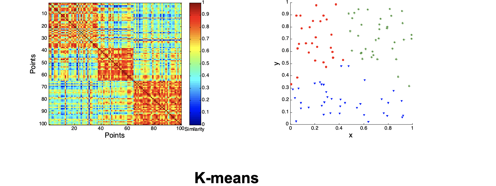
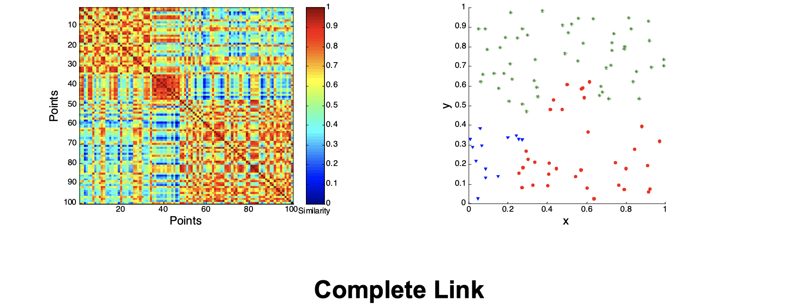
Intuitively, from the three images above we can see that they’re not performing well and K-means performs slightly better than the other two. Now let’s look at a visual proof of DBSCAN working well at density cluster with arbitrary shapes.
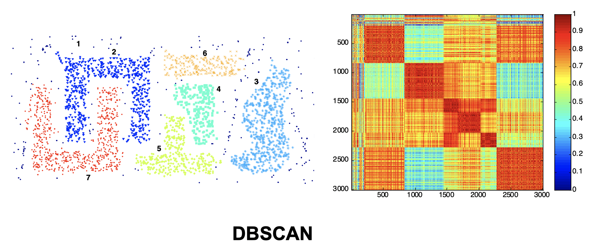
Internal Measures: SSE (Sum of Square Error)
Internal Index is used to measure the goodness of a clustering structure without respects to external information. SSE is good for comparing two clusterings or two clusters, and it can be used to estimate the number of clusters. For instance, as the images below, we know that the groud truth of clusters shall be 10. On the curve, after K > 10, the graph becomes very flat, which implies that K=10 is a good choice for the number of clusters because the ‘elbow’ happens here.
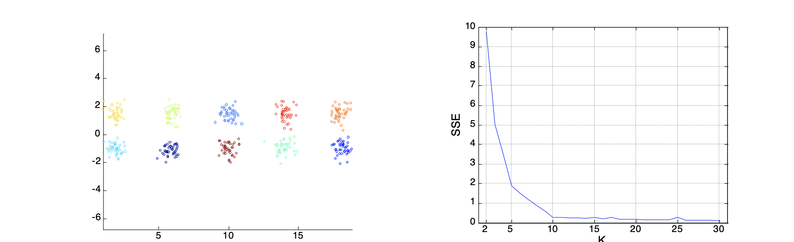
Stastical Framework of Cluster Validity
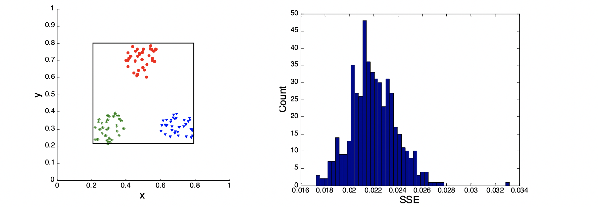
Let’s look at the image above. We assume that we know the SSE on the left-hand side of the image is 0.005, then on the right-hand side of the image is a plot of a random distribution, which has a SSE around 0.022, so we know any clusterings that has a SSE lower than 0.022 is better, because 0.022 is the SSE of random data points.
I will make some GIF to visually illustrate clusterings during the winter break.